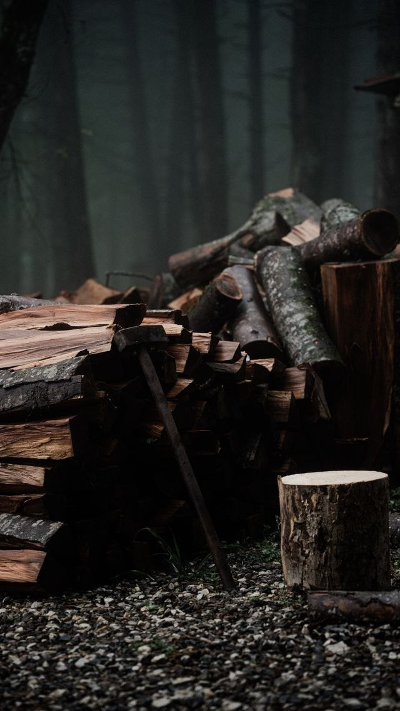

Qué incluye
- Volteo controlado y desrame
- Trozado, picado y apilado de leña
- Limpieza del terreno
- Venta de leña lista para usar
Cotiza este servicio
Respuesta el mismo día en horario hábil · Lun–Sáb 9:00 a 19:00.
Cotizar por WhatsAppLlamarVolteo controlado, trozado, picado y apilado — y si necesitas, te vendemos la leña lista para el invierno.

Respuesta el mismo día en horario hábil · Lun–Sáb 9:00 a 19:00.
Cotizar por WhatsAppLlamar